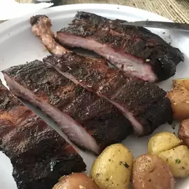

Sweet Smoked Pork Ribs

Description
A sweet recipie for smoked pork ribs cooked to perfection.
Ingredients
- 1/4 cup of salt
- 1/4 cup of packed brown sugar
- 2 tablespoons ground black pepper
- 2 tablespoons ground white pepper
- 2 tablespoons onion powder
- 1 tablespoon garlic powder
- 1 tablespoon chili powder
- 1 tablespoon ground paprika
- 1 tablespoon ground cumin
- 10 pounds baby back pork ribs
- 1 cup apple juice
- 1/4 cup packed brown sugar
- 1/4 cup barbeque sauce
Steps
- Stir salt, white sugar, 2 tablespoons brown sugar, black pepper, white pepper,
onion powder, garlic powder, chili powder, paprika, and cumin together in a small bowl to make the dry rub.
Rub the spice mixture into the baby back ribs on all sides. Wrap the ribs well with plastic wrap,
and refrigerate for at least 30 minutes prior to cooking.
-
Unwrap baby back ribs and place onto the wire racks of
the smoker in a single layer.
-
Place the racks into a smoker, fill the smoker pan with apple, grape, pear, or cherry chips,
and bring the smoker to 270 degrees F (130 degrees C). Smoke for 1 hour.
-
Stir together the apple juice, 1/4 cup brown sugar, and the barbeque sauce.
Brush the ribs with the sauce every 30 to 45 minutes after the first hour.
Cook the ribs in the smoker until the meat is no longer pink and begins to "shrink" back from the bones, 3 to 4 hours.
Brush the sauce onto the ribs one last time 30 minutes before the ribs are ready to be taken out of the smoker.
-
Once the ribs are done, wrap them tightly with aluminum foil, and allow to rest 10 to 15 minutes.
This will allow the juices to reabsorb into the meat and make the ribs moist.
Back to Home Page